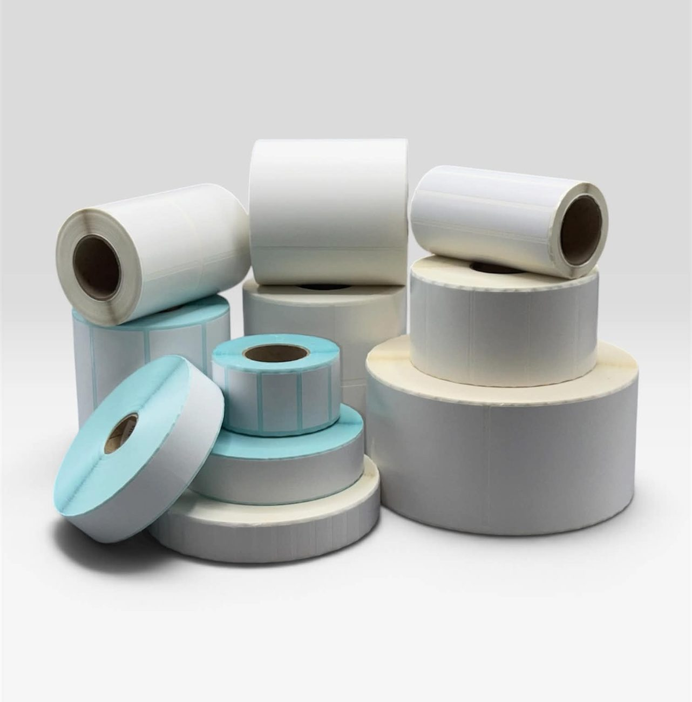
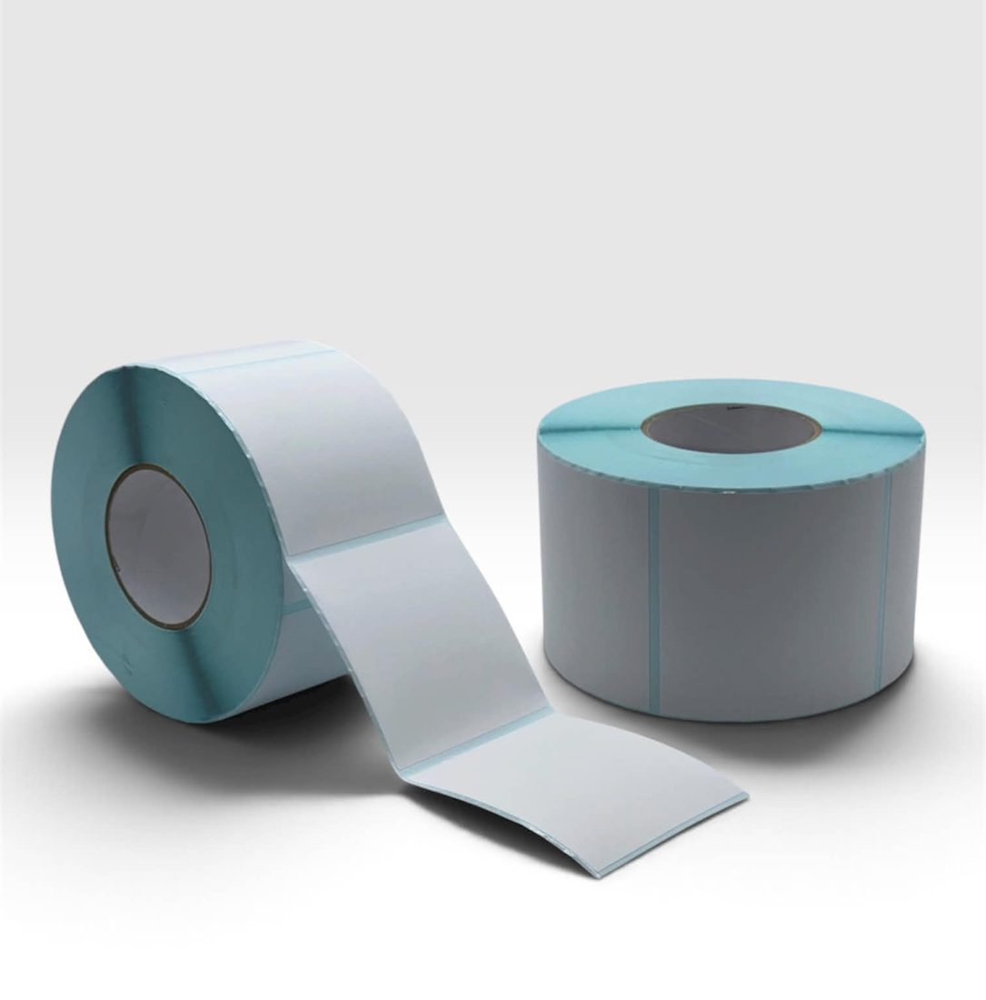
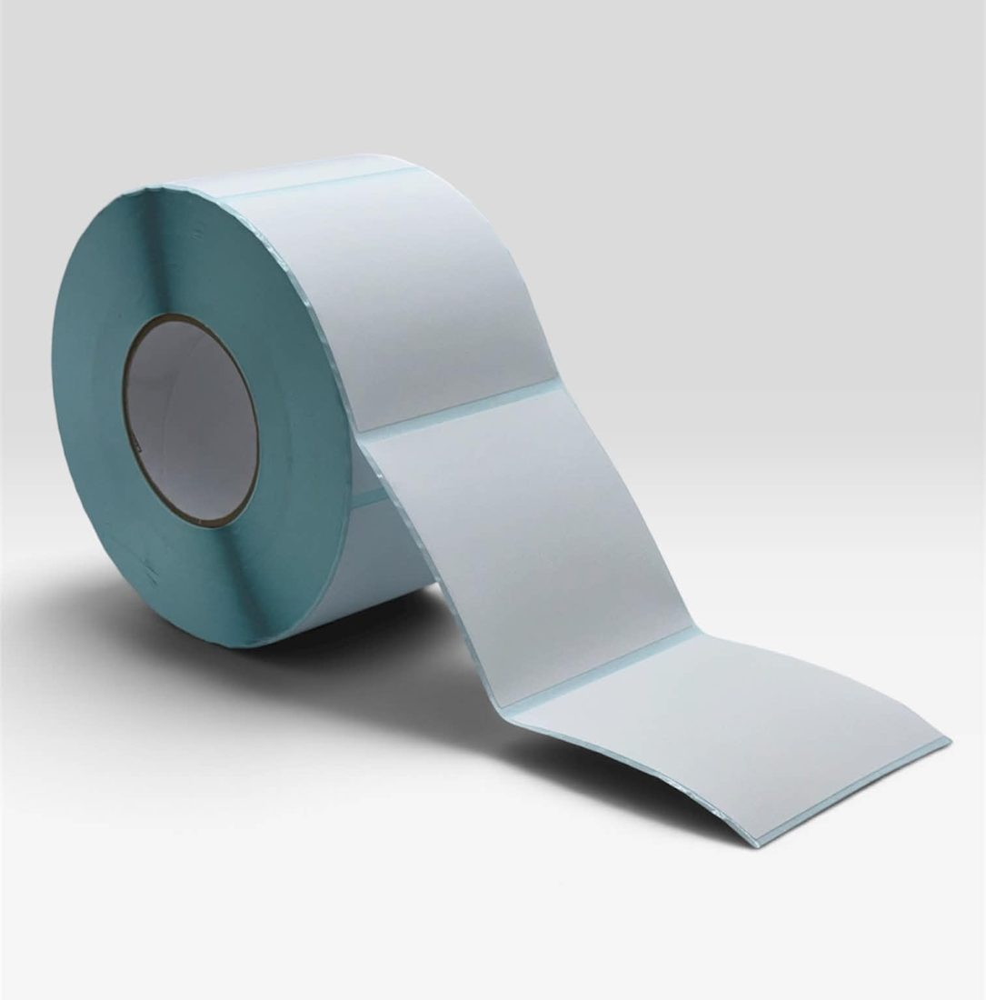
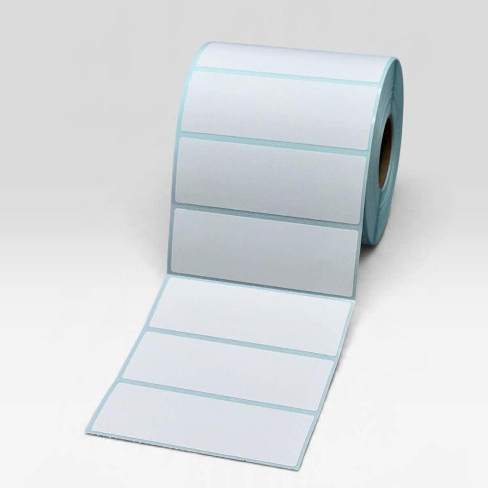

สติกเกอร์ปั๊มเปล่าสำหรับเครื่องพิมพ์บาร์โค้ด ใบปะหน้าพัสดุ และฉลากสินค้าที่พิมพ์ข้อมูลเอง ไดคัทตามขนาด ม้วนตามขนาดแกนที่เครื่องของคุณใช้

พิมพ์ด้วยความร้อน ไม่ต้องใช้ริบบอน เหมาะกับใบปะหน้าพัสดุ ฉลากชั่งน้ำหนัก มีแบบทนการฉีกขาด
ใช้คู่กับริบบอน ตัวพิมพ์ทนนาน ไม่ซีดง่าย เหมาะกับฉลากสินค้าและงานคลังสินค้า
กระดาษขาวด้าน ขาวเงา และ PP กันน้ำ สำหรับพิมพ์เพิ่มหรือเขียนเอง
1 นิ้ว · 1.5 นิ้ว · 3 นิ้ว และจำนวนดวงต่อม้วนตามที่ใช้งาน
เลือกขนาดที่มีบล็อกอยู่แล้ว ไม่ต้องเสียค่าบล็อกใหม่ (รายการนี้ทยอยเพิ่มอยู่เรื่อยๆ)
| กว้าง × สูง (มม.) | ทรง | วัสดุที่เคยผลิต |
|---|
ไม่เจอขนาดที่ต้องการ? ทัก Line แจ้งขนาด ทำบล็อกใหม่ได้ทุกขนาด
เครื่อง SANKI SKP-250A ระบบโรตารี่ ไดคัทฉลากเปล่าต่อเนื่อง แม่นยำ ผลิตได้เร็ว รองรับงานล็อตใหญ่



แจ้งขนาด วัสดุ แกน และจำนวนดวงต่อม้วน ทีมงานประเมินราคาให้